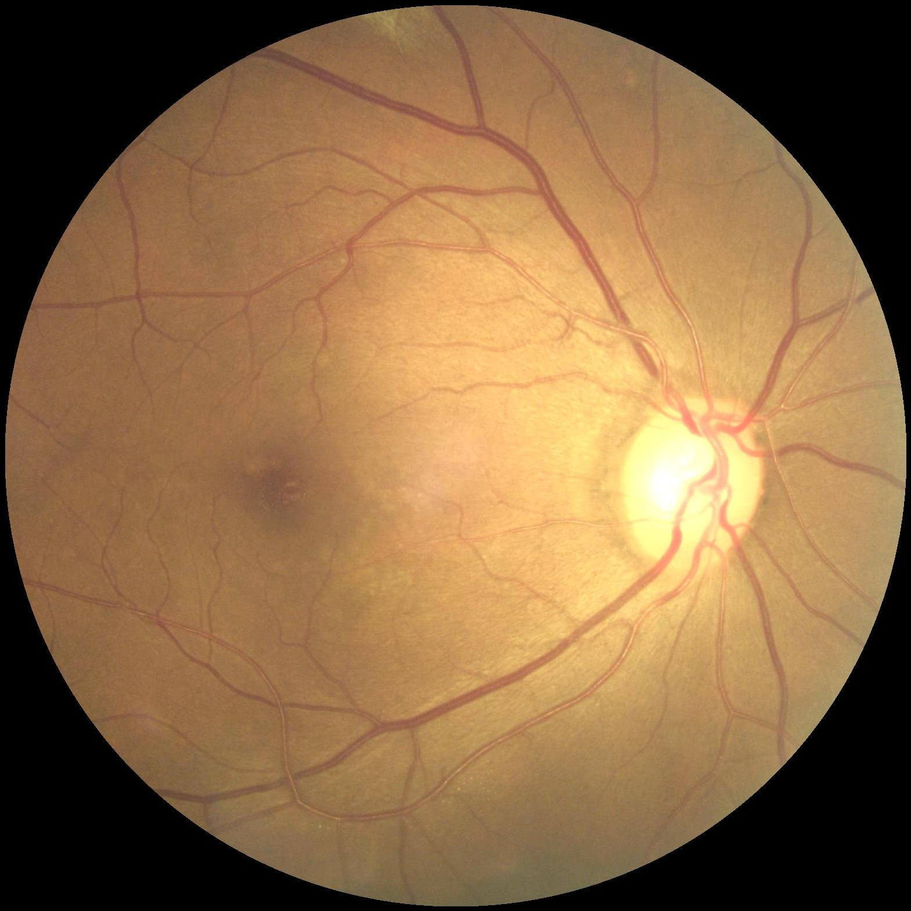
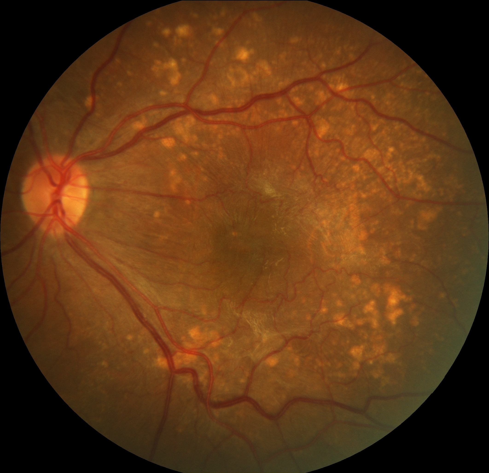

Application of AI algorithms in diagnosis of fundus diseases

Published Wed 06 September 2023
The application of artificial intelligence algorithms in the diagnosis of retinal diseases is progressively leading the transformation of the field of medicine. With the continuous development of computer vision and deep learning technologies, artificial intelligence has made significant strides in ophthalmic medicine, providing powerful tools for early detection and diagnosis of retinal diseases. Currently, our primary focus lies in the exploration of AI algorithms for a spectrum of retinal diseases, including pathological myopia, diabetic retinopathy, glaucoma, cataracts, hypertensive retinopathy, age-related macular degeneration, and retinopathy of prematurity, among others. The objective is to utilize artificial intelligence systems to facilitate rapid screening of extensive retinal image databases, aiding physicians in early diagnosis of retinal diseases and enabling timely therapeutic interventions.
Project leaders
SHAOBINCHEN
Project Example



